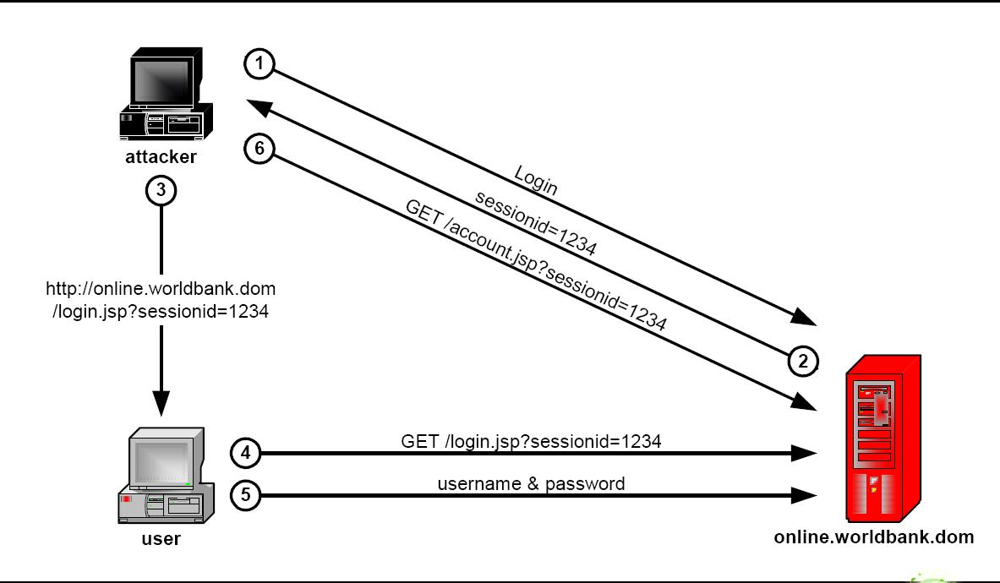

很多WEB开发语言为了防止浏览器禁止了cookie而无法识别用户，允许在URL中携带sessionid，这样虽然方便，但却有可能引起钓鱼的安全漏洞。
图示：
下图是从测试组发来的安全报告中剪出来的，图有些小问题，本来想重画1个，在visio中没找到合适的图。所以只能用别人的图了。

http://hiphotos.baidu.com/hxzon/pic/item/4c7c217f686f5d4c29388a54.jpg
说明：
让我们对上图的步骤进行详细说明：
1. 黑客用自己的帐号登录,假设登录页面是:http://www.abc.com/login.jsp
2. 服务器返回登录成功。
3. 黑客从cookie中查看自己的sessionid，比如是1234
4. 黑客把带自己sessionid的地址发送给一般用户。http://www.abc.com/login.jsp;jsessionid=1234(不同的语言带sessionid的方式不一样，着是jsp的方式)
5. 用户在黑客给的地址中用自己的帐号进行登录，登录成功。(这个时候用户登录的信息就会覆盖黑客之前的登录信息，而且2个人用的是同1个sessionid) 6. 黑客刷新页面，看到的账户信息就是用户的信息了，而不是之前黑客自己帐号的信息。
防治：
要防止这种问题，其实也很简单，只要在用户登录时重置session(session.invalidate()方法)，然后把登录信息保存到新的session中。
后语：
可能你跟我一样，刚开始看到这个时候，就自己去测试到底能不能钓鱼成功，经过我的测试是可以成功的，但测试过程中需要注意下面几个问题：
1. 要注意你使用的语言是如何在URL中带sessionid。(我测试的时候开始在URL中使用大写的jsessionid，导致一直不起效)
2. 要http://www.abc.com/login.jsp;jsessionid=1234页面登录表单的action也带上了jsessionid,不然也没用。对于这个问题你可能觉得如果login.jsp表单的action是写死，而不是读取当前URL的， 可能就不会出现这个钓鱼问题。这只能防住1个方向。黑客可以做1个和login.jsp一模一样的页面(比如http://www.abc1.com/login.jsp)，然后把这个地址发个客户，而这个地址中的表单这样写就可以： <form action="http://www.abc.com/login.jsp;jsessionid=1234" ....